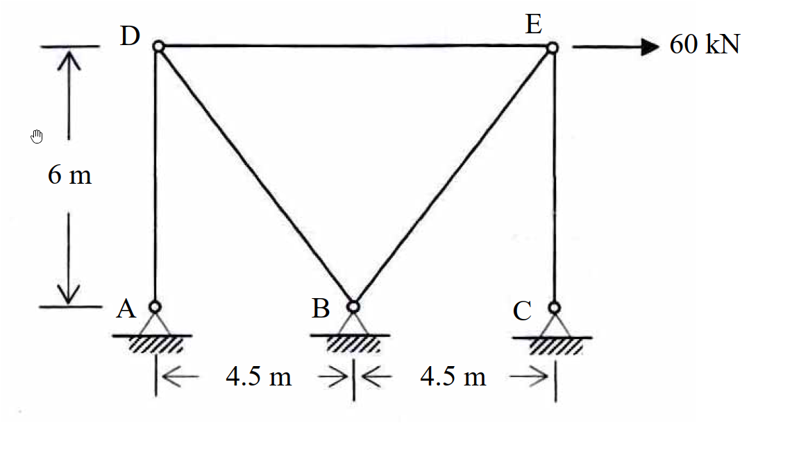
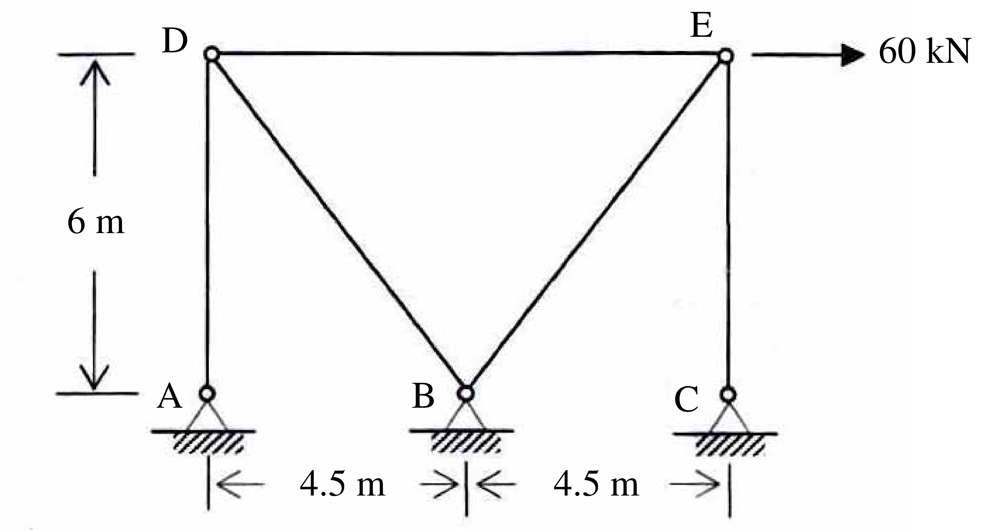
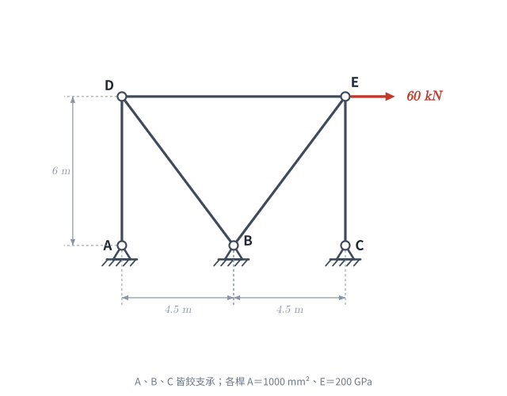
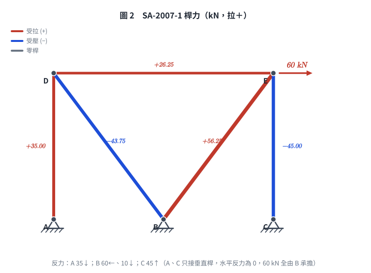

📄 題目正本（考卷原文、附圖與判讀清單；不含解法）
SA-2007-1 題目正本
本檔只記錄考卷上寫了什麼、圖上畫了什麼，不含任何解法。解析見同資料夾
SA-2007-1.md。
判讀清單經使用者確認前，狀態為「待確認」；確認後本檔原則上不再修改（改動須回考卷原圖並記 log）。
| 項目 | 內容 |
|---|---|
| 考卷 | raw/exams/SA-2007_結構學.pdf，第 1 頁（正面），第一題（無圖號） |
| 考年 | 2007（民國 96 年）專技高考結構工程技師「結構學」 |
| 配分 | 25 分 |
| 附圖 | SA-2007-1-fig-1.png、SA-2007-1-fig-2.png |
| 判讀狀態 | 已確認（2026-11-07 使用者確認；原轉錄：2026-11-07 轉錄；PyMuPDF 110 dpi 整頁＋400–1200 dpi 局部放大（附圖為掃描點陣圖）；盲讀於開啟解析前完成） |
1. 考卷原文（逐字）
一、如圖所示之桁架（truss），點A、B 及C 為鉸接（hinge）。若每根桿件之斷面積A = 1000 mm²，楊氏係數E = 200 GPa，當E 點有一水平載重60 kN 時，試計算支承反力及各桿內力。（25 分）
2. 考卷給的公式、附表與參數
- 考卷沒有給任何參考公式或附表。
- 給定：各桿 A＝1000 mm²、E＝200 GPa（各桿相同）。
- 卷首注意事項：㈠可以使用電子計算器。㈡不必抄題，作答時請將試題題號及答案依照順序寫在試卷上，於本試題上作答者，不予計分。
- 考試時間：2 小時。
3. 附圖

證據圖 SA-2007-1-fig-1.png

證據圖 SA-2007-1-fig-2.png（2026-11-07 自考卷重新擷取 500 dpi，無游標）
圖面文字照錄：D、E、60 kN、6 m、A、B、C、4.5 m、4.5 m
4. 判讀清單
| # | 項目 | 判讀 | 圖上／題文依據 | 把握 |
|---|---|---|---|---|
| 1 | A、B、C | 三個鉸支承（圓圈＋三角形＋剖線） | 350 dpi 放大；題文「點 A、B 及 C 為鉸接」 | 確定 |
| 2 | 節點 D、E | 桁架節點（小空心圓）；D 在 A 正上方、E 在 C 正上方 | 圖面：A–D、C–E 為垂直桿 | 確定 |
| 3 | 桿件 | A–D、D–E、D–B、B–E、E–C 共 5 根；B 為兩斜桿交會點 | 圖面 | 確定 |
| 4 | 尺寸 | 高 6 m（D、E 至地面支承）；A–B 4.5 m、B–C 4.5 m，D–E 長 9 m | 尺寸線端點對齊 A、B、C 圓圈中心；6 m 上下界線對齊 D、A | 確定 |
| 5 | 材料 | 各桿 A＝1000 mm²、E＝200 GPa | 題文 | 確定 |
| 6 | 載重 | E 點水平向右 60 kN | 箭頭自 E 向右 | 確定 |
| 7 | 所求 | 支承反力及各桿內力 | 題文 | 確定 |
| 8 | 靜不定度 | m＝5、r＝6、j＝5：m＋r＝11＞2j＝10，一度靜不定 | 計數 | 確定（解讀）；使用者確認 |
| 9 | 證據圖 | 舊 fig-1 有游標（6 m 尺寸線旁，未壓構件）；新增 fig-2（500 dpi） | — | 確定 |
轉錄：2026-11-07（SA-U2-2 題目正本推廣・批 1）
確認：2026-11-07 使用者確認
考題編號：[SA-2007-1]
主分類： SA-U2-2 靜不定結構諧合變位
副分類： 無
分析法： 最小功法
標籤： 靜不定桁架 單位力法 柔度矩陣法 相容方程式
1. 題目（考卷原文見題目正本）
考卷原文、公式／附表、附圖與判讀清單（已確認）見
SA-2007-1-problem.md。本節只列解題時最容易讀錯的地方與本解使用的記號；題意以題目正本為準。

重繪自考卷附圖，依判讀清單重繪。攔：支承讀成滾支承（變靜定）、漏掉 B 點兩斜桿交會。
常見誤讀
| 項目 | 正確判讀 | 常見誤讀 |
|---|---|---|
| 支承 | A、B、C 三個鉸支承（6 個反力） | 其中一個讀成滾支承 |
| 桿件 | 5 根：AD、DE、DB、BE、EC | 多補 A–B、B–C 下弦 |
| 靜不定度 | m＋r＝11 ＞ 2j＝10，一度 | 判為靜定 |
本解記號： DB、BE 長 7.5 m（4.5／7.5 = 0.6、6／7.5 = 0.8）；A＝1000 mm²、E＝200 GPa；桿力拉為正。
2. 考題核心精神與出題者意圖 (Core Concepts & Examiner's Intent)
- 考驗靜不定度判斷： 本結構並非標準靜定桁架，具備三個固定鉸支承 (提供 6 個反力)，考生必須正確判斷其靜不定度為 1 度。
- 單位力法 (力法) 的熟練度： 要求考生能正確選定一贅力 (如 DE 桿件內力)，將結構拆解為靜定的基本結構，並運用相容方程式 (Compatibility Equation) 解出贅力。
- 幾何與內力計算的準確性： 桁架的斜桿長度與斜率需準確計算，並在節點平衡中正確分解力量，考驗基本靜力學的細心度。
3. 解題戰略地圖與陷阱分析 (Strategic Roadmap & Trap Analysis)
- 戰略一：判別靜不定度與基本結構
- $m=5$，$j=5$，$r=6$。靜不定度 $i = 5+6-2(5) = 1$。
- 選擇 DE 桿件內力為贅力 $X$。切斷 DE 桿後，結構變為左右兩個完全獨立的靜定桁架 (左側 ADB，右側 CEB)，大幅簡化計算。
- 戰略二：建立相容方程式
- 基本結構受原外力 $P=60\text{ kN}$ 作用，計算各桿內力 $F_0$。
- 基本結構在切斷處 (D, E) 施加一單位對向拉力，計算各桿內力 $f_1$。
- 計算位移係數 $\Delta_{10} = \sum \frac{F_0 f_1 L}{EA}$ 及柔度係數 $f_{11} = \sum \frac{f_1^2 L}{EA}$。
- 解方程式 $\Delta_{10} + f_{11} X = 0$ 得到贅力 $X$。
- 戰略三：疊加法求最終內力與反力
- 最終內力 $F = F_0 + f_1 X$。
- 由最終內力，透過各支承節點的平衡方程式求得支承反力。
- 陷阱分析：
- 陷阱 1 (贅力選擇)： 若選支承反力為贅力，基本結構將變得複雜 (不再是兩個獨立的靜定桁架)，計算量會大幅增加且易算錯。選擇 DE 桿件內力是最佳捷徑。
- 陷阱 2 (正負號約定)： $F_0$ 與 $f_1$ 的拉力與壓力符號必須嚴格統一 (拉力為正，壓力為負)，否則在 $\sum F_0 f_1 L$ 時會導致正負號錯誤。
3.5 變數層次分析 (Variable Hierarchy Analysis)
最終目標
求出所有支承反力 (A, B, C) 以及各桿件最終內力
本題關鍵公式（依計算順序）
-
靜不定度：
$i = m + r - 2j$ -
相容方程式：
$\Delta_{10} + f_{11} X = 0$ -
位移係數計算：
$\Delta_{10} = \sum \frac{F_0 f_1 L}{EA} \quad , \quad f_{11} = \sum \frac{f_1^2 L}{EA}$ -
最終內力疊加：
$F = \boxed{F_0} + \boxed{f_1} \boxed{X}$
L1：題目直接給定
| 符號 | 數值 | 說明 |
|---|---|---|
| $A$ | $1000 \text{ mm}^2 = 10^{-3} \text{ m}^2$ | 桿件斷面積 |
| $E$ | $200 \text{ GPa} = 2 \times 10^8 \text{ kN/m}^2$ | 楊氏係數 |
| $EA$ | $200,000 \text{ kN}$ | 軸向勁度 |
| $P$ | $60 \text{ kN}$ | E 點水平載重 |
L2：需知識點推導
基本結構與內力
| 符號 | 公式／來源 | 卡關? |
|---|---|---|
| $L_{DB}, L_{BE}$ | $\sqrt{4.5^2 + 6^2} = 7.5 \text{ m}$ | |
| $F_0$ | 節點法求外力作用下內力 | |
| $f_1$ | 節點法求單位贅力作用下內力 | |
相容方程式與贅力
| 符號 | 公式／來源 | 卡關? |
|---|---|---|
| $\Delta_{10}$ | $\sum \frac{F_0 f_1 L}{EA}$ | |
| $f_{11}$ | $\sum \frac{f_1^2 L}{EA}$ | |
| $X$ | $-\frac{\Delta_{10}}{f_{11}}$ | |
L3：深層知識（不懂就卡住）
| 知識點 | 說明 | 卡關? |
|---|---|---|
| 單位力法之贅力選取 | 切斷 DE 桿件，將系統化約為兩個靜定子桁架，可極大化計算效率 |
4. 步驟化詳細計算過程 (Step-by-Step Detailed Calculation)
Step 1: 判定靜不定度與選擇基本結構
- 桿件數 $m=5$，節點數 $j=5$，支承反力數 $r=6$ (三個鉸支承各提供 2 個反力)。
- 靜不定度 $i = m + r - 2j = 5 + 6 - 2(5) = 1$。
- 策略註解： 選擇移除桿件 DE 作為贅力 $X$。此舉將原結構拆分為左右兩個完全獨立的三鉸桁架，外力 $60\text{ kN}$ 僅作用於右側結構，大幅簡化 $F_0$ 的計算。
Step 2: 計算基本結構外力內力 ($F_0$)
基本結構在 E 點承受水平向右 $60 \text{ kN}$，左側結構無受力。
- 右側桁架 (節點 E 平衡)：
斜桿 BE 長度 $L_{BE} = \sqrt{4.5^2 + 6^2} = 7.5 \text{ m}$。
$\sum F_x = 0 \implies 60 - F_{0,BE} \cdot (\frac{4.5}{7.5}) = 0 \implies F_{0,BE} = 100 \text{ kN} \quad (\text{拉力})$
$\sum F_y = 0 \implies -F_{0,CE} - F_{0,BE} \cdot (\frac{6}{7.5}) = 0 \implies F_{0,CE} = -100(0.8) = -80 \text{ kN} \quad (\text{壓力})$ - 左側桁架 (節點 D)： 無外力。
$F_{0,AD} = 0 \text{ kN}$
$F_{0,DB} = 0 \text{ kN}$ - DE 桿件： $F_{0,DE} = 0 \text{ kN}$
Step 3: 計算單位贅力內力 ($f_1$)
在切斷的 DE 兩端施加一單位對向拉力，即 E 點受向左 $1 \text{ kN}$，D 點受向右 $1 \text{ kN}$。
- 右側桁架 (節點 E 受向左 $1 \text{ kN}$)：
其受力狀態與 Step 2 方向相反，大小為 $1/60$。
$f_{1,BE} = -\frac{1}{0.6} = -\frac{5}{3} \text{ kN} \quad (\text{壓力})$
$f_{1,CE} = -f_{1,BE} \cdot 0.8 = -(-\frac{5}{3}) \cdot 0.8 = \frac{4}{3} \text{ kN} \quad (\text{拉力})$ - 左側桁架 (節點 D 受向右 $1 \text{ kN}$)：
斜桿 DB 長度 $L_{DB} = 7.5 \text{ m}$。
$\sum F_x = 0 \implies 1 + f_{1,DB} \cdot (\frac{4.5}{7.5}) = 0 \implies f_{1,DB} = -\frac{5}{3} \text{ kN} \quad (\text{壓力})$
$\sum F_y = 0 \implies -f_{1,AD} + f_{1,DB} \cdot (\frac{-6}{7.5}) = 0 \implies f_{1,AD} = (-\frac{5}{3})(-0.8) = \frac{4}{3} \text{ kN} \quad (\text{拉力})$ - DE 桿件： $f_{1,DE} = 1 \text{ kN} \quad (\text{拉力})$
Step 4: 建立相容方程式並求解贅力 $X$
由於 $EA$ 均為常數，可將其提出：
$$ \Delta_{10} = \sum \frac{F_0 f_1 L}{EA} = \frac{1}{EA} \left[ F_{0,BE} f_{1,BE} L_{BE} + F_{0,CE} f_{1,CE} L_{CE} \right] $$
$$ \Delta_{10} = \frac{1}{EA} \left[ (100)(-\frac{5}{3})(7.5) + (-80)(\frac{4}{3})(6) \right] = \frac{1}{EA} [ -1250 - 640 ] = -\frac{1890}{EA} $$
$$ f_{11} = \sum \frac{f_1^2 L}{EA} = \frac{1}{EA} \left[ f_{1,AD}^2 L_{AD} + f_{1,CE}^2 L_{CE} + f_{1,DB}^2 L_{DB} + f_{1,BE}^2 L_{BE} + f_{1,DE}^2 L_{DE} \right] $$
$$ f_{11} = \frac{1}{EA} \left[ (\frac{4}{3})^2(6) + (\frac{4}{3})^2(6) + (-\frac{5}{3})^2(7.5) + (-\frac{5}{3})^2(7.5) + (1)^2(9) \right] $$
$$ f_{11} = \frac{1}{EA} \left[ 10.667 + 10.667 + 20.833 + 20.833 + 9 \right] = \frac{72}{EA} $$
相容方程式：
$$ \Delta_{10} + f_{11} X = 0 $$
$$ -\frac{1890}{EA} + \frac{72}{EA} X = 0 \implies \boxed{X = \frac{1890}{72} = 26.25 \text{ kN}} $$
Step 5: 疊加法求各桿最終內力 ($F = F_0 + f_1 X$)
- $F_{AD} = 0 + (\frac{4}{3})(26.25) = \boxed{35 \text{ kN} \quad (\text{拉力})}$
- $F_{CE} = -80 + (\frac{4}{3})(26.25) = \boxed{-45 \text{ kN} \quad (\text{壓力})}$
- $F_{DB} = 0 + (-\frac{5}{3})(26.25) = \boxed{-43.75 \text{ kN} \quad (\text{壓力})}$
- $F_{BE} = 100 + (-\frac{5}{3})(26.25) = \boxed{56.25 \text{ kN} \quad (\text{拉力})}$
- $F_{DE} = 0 + (1)(26.25) = \boxed{26.25 \text{ kN} \quad (\text{拉力})}$
Step 6: 求解支承反力
取節點平衡，設向右、向上為正。
- 節點 A (僅連接垂直桿 AD)：
$\sum F_x = 0 \implies \boxed{A_x = 0 \text{ kN}}$
$\sum F_y = 0 \implies A_y + F_{AD} = 0 \implies \boxed{A_y = -35 \text{ kN} \quad (\text{向下})}$ - 節點 C (僅連接垂直桿 CE)：
$\sum F_x = 0 \implies \boxed{C_x = 0 \text{ kN}}$
$\sum F_y = 0 \implies C_y + F_{CE} = 0 \implies C_y - 45 = 0 \implies \boxed{C_y = 45 \text{ kN} \quad (\text{向上})}$ - 節點 B (連接斜桿 DB, BE)：
$\sum F_x = 0 \implies B_x + F_{DB}(\frac{4.5}{7.5}) + F_{BE}(\frac{-4.5}{7.5}) = 0$
$B_x + (-43.75)(0.6) + (56.25)(-0.6) = 0 \implies B_x - 26.25 - 33.75 = 0 \implies \boxed{B_x = 60 \text{ kN} \quad (\text{向左})}$
(註：反力方向為負，代表向左。解為 $B_x = +60$ 向右為正？ 重新檢視：$B_x$ 抵銷桿件水平推力，桿件水平推力總和為左向 60，故反力 $B_x$ 為向右 60？ 等等，$F_{DB}$ 壓力推 B 向右，$F_{BE}$ 拉力拉 B 往右上？不對，BE 桿件在 B 點，往右上拉，水平分力向右；DB 桿在 B 點，往左上壓，對 B 節點的作用力向右下？不，DB 為壓力，推向 B 節點，所以是右下方。兩者對 B 的水平力皆向右！故 $B_x$ 反力必向左！)
重新計算：
$B_x + (F_{DB,x}) + (F_{BE,x}) = 0$
DB 在 B 點的單位向量為 $(-4.5/7.5, 6/7.5) = (-0.6, 0.8)$。$F_{DB} = -43.75$，所以作用力為 $(-43.75)(-0.6, 0.8) = (26.25, -35)$。
BE 在 B 點的單位向量為 $(4.5/7.5, 6/7.5) = (0.6, 0.8)$。$F_{BE} = 56.25$，所以作用力為 $(56.25)(0.6, 0.8) = (33.75, 45)$。
$\sum F_x = B_x + 26.25 + 33.75 = 0 \implies B_x = -60 \text{ kN}$ (向左)。
$\sum F_y = B_y - 35 + 45 = 0 \implies B_y = -10 \text{ kN}$ (向下)。
故 $\boxed{B_x = 60 \text{ kN} \quad (\text{向左})}$，$\boxed{B_y = 10 \text{ kN} \quad (\text{向下})}$。

圖 2 桿力（紅拉藍壓，線寬隨力量大小；全節點平衡含反力殘差為 0 才繪製）。A、C 只接垂直桿，60 kN 水平力全由 B 承擔；這張圖攔的是「A、C 也分攤水平反力」與「$B_x$ 方向畫反」。
(整體平衡驗證：$\sum F_x = 60 + (-60) = 0$ OK。$\sum F_y = -35 + (-10) + 45 = 0$ OK。)
5. 關鍵爭議點與進階探討 (Critical Issues & Advanced Discussion)
- 反力驗證的重要性： 桁架解題過程中容易在各節點的正負號分解發生失誤，最後必須使用整體結構的力矩與力平衡方程式，例如 $\sum M_B = (-35)(-4.5) + (45)(4.5) - 60(6) = 157.5 + 202.5 - 360 = 0$，確認無誤後方能交卷。
- 不同的贅力選擇： 若選取水平反力如 $C_x$ 作為贅力，由於原結構 $A, B, C$ 皆為固定鉸支承，去除 $C_x$ 結構仍保持靜定但不再解耦，需要解整個 5 桿結構的內力，計算量約為選 DE 桿的兩倍。在考場上，觀察幾何對稱性與載重特徵以選出「能切出獨立子結構」的贅力，是奪取高分的關鍵。
修正日期：2026-11-07（§1 改為指向題目正本並放重繪附圖（figs/SA-2007-1-fig-1-problem.svg）、加常見誤讀；圖由 gen_SA-2007-1.py 產生，可重跑）
修正日期：2026-11-07（非勘誤）圖解補繪：圖 2（gen_SA-2007-1.py，可重跑）